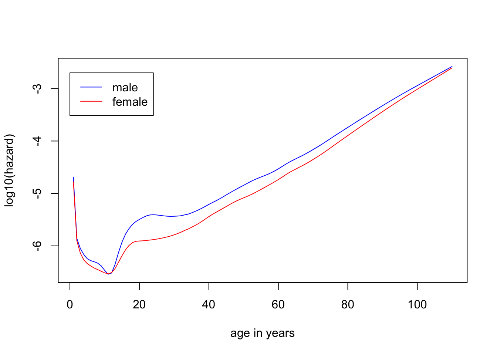
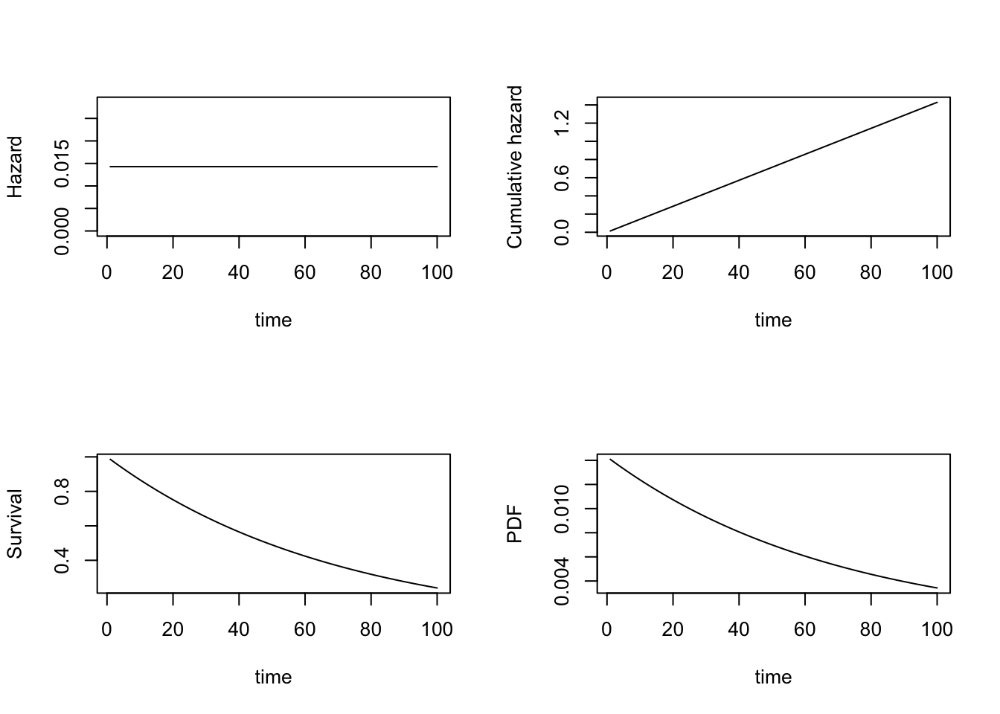
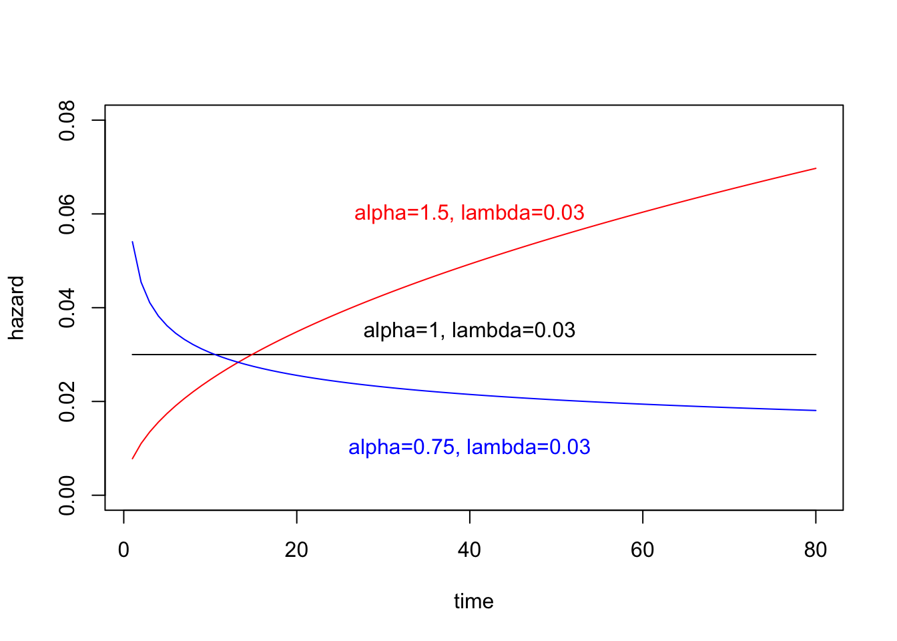
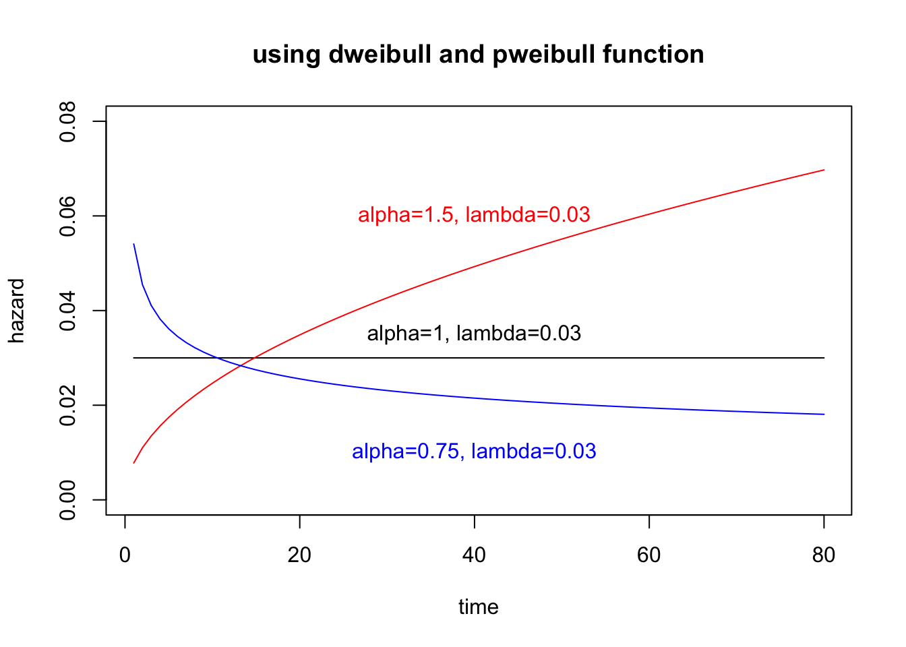
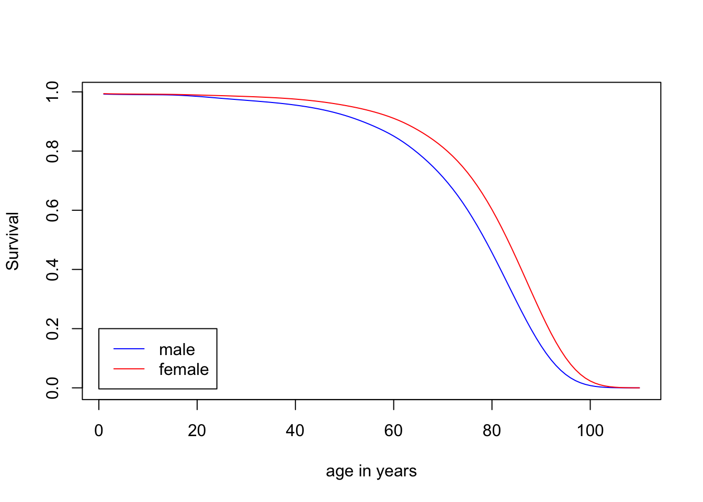

2 Basic Principles of Survival Analysis
2.1 Hazard and Survival Functions
Survival function defines the probability of surviving up to a point t,
\[S(t)=pr(T>t), 0<t<\infty\]
, which decreases (or remains constant) over time
Hazard function is the instantaneous (瞬间) failure rate,
\[h(t) = \lim\limits_{\delta \to \infty}\frac{pr(t<T<t+\delta|T>t)}{\delta}\]
This function is also known as intensity function or the force of mortality
Example 2.1 The daily hazard rates of men and women by age in each calendar year from 1940 to 2004
library(survival)
tm <- c(0,
1/365, # first day of life
7/365, # seventh day of life
28/365, # fourth week of life
1:110) # subsequent years
hazMale <- survexp.us[,"male","2004"]
hazFemale <- survexp.us[,"female","2004"]
## not sure how to get the harzard for the days or weeks in the first year
plot(1:110, log10(hazMale), col="blue", type="l", ylab="log10(hazard)", xlab="age in years")
lines(1:110, log10(hazFemale), col="red")
legend(0, -2.7, legend=c("male", "female"), lty=1, col=c("blue", "red"))
2.2 Other Representations of a Survival Distribution
Cumulative distribution function (CDF), also known as the cumulative risk function
\[F(t) = pr(T \le t) = 1-S(t), 0<t<\infty\]
Probability density function (PDF),
\[f(t) = \frac{d}{dt} F(t) = \frac{d}{dt}[1-S(t)]=-\frac{d}{dt}S(t)\]
, related to hazard function and survival functions
\[h(t)=\frac{f(t)}{S(t)}\]
That is, the harzard at time t is the probability that an event occurs in the neighborhood of time t divided by the probability that the subject is alive at time t.
The cumulative hazard function is defined as the area under the hazard function up to time t,
\[H(t)=\int_0^th(u)du\]
The survival function may be defined in terms of the harzard function by
\[S(t)=exp(-\int_0^th(u)du)=exp(-H(t))\]
Derivations:
\(H(t) = \int_0^th(u)du\) \(=\int_0^t\frac{f(u)}{S(u)}du\) \(=\int_0^t\frac{-\frac{d}{du}S(u)}{S(u)}du\) \(=\int_0^t\frac{-d(S(u))}{S(u)}\) \(=-ln(S(u))|^t_0\) \(=-ln(S(t))+ln(S(0))\) \(=-ln(S(t))\)
2.3 Mean and Median Survival Time
\[\mu=E(T)=\int_0^\infty tf(t)dt\]
Based on \(\lim\limits_{t \to \infty}(tS(t))=0\), we can have a formula
\[\mu=\int_0^\infty S(t)dt\]
The mean survival time is only defined if \(S(\infty)=0\) (such as time to death), but not in the case \(S(\infty)=c\) (such as cancer recurrence; fraction c of subjects will not recurrent, and the area under the survival curve is infinite)
The median survival time is defined as the time t such that \(S(t)=1/2\).
2.4 Parametric Survival Distributions
The exponential distribution, the simplest survival distribution, has a constant hazard, \(h(t)=\lambda\)
The cumulative hazard function
\[H(t)=\int_0^t h(u)du=\int_0^t \lambda du=\lambda t|_0^t=\lambda t\]
The survival function is
\[S(t)=e^{-H(t)}=e^{-\lambda t}\]
The probability density function is
\[f(t) = h(t)S(t)=\lambda e^{-\lambda t}\]
The mean of survival time is
\[E(T)=\int_0^{\infty} S(t)dt=\int_0^{\infty} e^{-\lambda t}dt = 1/\lambda\]
The median of survival time is
\[0.5=e^{-\lambda t}\text{, so }t_{med}=ln(2)/\lambda\]
lambda=1/70
layout(matrix(1:4,2,2))
plot(1:100, rep(lambda,100), xlab="time", ylab="Hazard", ylim=c(0,2/70), type="l")
plot(1:100, exp(-lambda*(1:100)), xlab="time", ylab="Survival", type="l")
plot(1:100, lambda*(1:100), xlab="time", ylab="Cumulative hazard", type="l")
plot(1:100, lambda*exp(-lambda*(1:100)), xlab="time", ylab="PDF", type="l")
Another distibution is Weibull distribution. Its hazard function
\[h(t)=\alpha\lambda(\lambda t)^{\alpha-1}=\alpha\lambda^{\alpha}t^{\alpha-1}\]
The cumulative hazard
\[H(t)=(\lambda t)^{\alpha}\]
The survival function
\[S(t) = e^{-(\lambda t)^{\alpha}}\]
The mean of survival time
\[E(T)=\frac{\Gamma(1+1/\alpha)}{\lambda}\] , where \(\Gamma(x)=(x-1)!\) is gamma function
The median of survival time
\[t_{med}=\frac{[ln(2)]^{1/\alpha}}{\lambda}\]
The exponential distribution is a special case with \(\alpha=1\)
h = function(t, alpha, lambda){
return(alpha*(lambda^alpha)*(t^(alpha-1)))
}
lambda=0.03
plot(1:80, h(1:80, alpha=1, lambda), xlab="time", ylab="hazard", type="l", ylim=c(0,0.08))
lines(1:80, h(1:80, alpha=1.5, lambda), col="red")
lines(1:80, h(1:80, alpha=0.75, lambda), col="blue")
text(40, 0.035, "alpha=1, lambda=0.03")
text(40, 0.06, "alpha=1.5, lambda=0.03", col="red")
text(40, 0.01, "alpha=0.75, lambda=0.03", col="blue")
### Weibull distribution can be calculated dweilbull() or pweibull()
h2 = function(t, alpha, lambda){
return(dweibull(t, shape=alpha, scale=1/lambda)/pweibull(t, shape=alpha, scale=1/lambda, lower.tail=F))
}
plot(1:80, h2(1:80, alpha=1, lambda), xlab="time", ylab="hazard", type="l", ylim=c(0,0.08), main="using dweibull and pweibull function")
lines(1:80, h2(1:80, alpha=1.5, lambda), col="red")
lines(1:80, h2(1:80, alpha=0.75, lambda), col="blue")
text(40, 0.035, "alpha=1, lambda=0.03")
text(40, 0.06, "alpha=1.5, lambda=0.03", col="red")
text(40, 0.01, "alpha=0.75, lambda=0.03", col="blue")
### generate random variables
set.seed(1)
tt.weib = rweibull(1000, shape=1.5, scale=1/0.03)
mean(tt.weib); median(tt.weib)## [1] 29.90708## [1] 26.95561### the theoretical mean and median
gamma(1+1/1.5)/0.03## [1] 30.09151(log(2)^(1/1.5))/0.03## [1] 26.10733A third distribution can be gamma distribution, with the PDF
\[f(t)=\frac{\lambda^\beta t^{\beta-1}exp[-\lambda t]}{\Gamma(\beta)}\]
Its hazard function cannot be written in closed form, but can be computed using R
gammaHaz = function(t, shape, scale){
return(dgamma(t, shape=shape, scale=scale)/pgamma(t, shape=shape, scale=scale, lower.tail=F))
}There are other parametric families of survival distributions, including log-normal, log-logistic, Pareto, and many more.
2.5 Computing the Survival Function from the Hazard Function
For complicated hazard function, we can use numerical methods to evaluate the integral.
### back to the Example 2.1
library(survival)
tm = 0:110
hazMale = survexp.us[,"male", "2004"]
hazFemale = survexp.us[,"female", "2004"]
tm.diff = diff(tm) ## time intervals
## survival
survMale = exp(-cumsum(hazMale*tm.diff)*365.24)
survFemale = exp(-cumsum(hazFemale*tm.diff)*365.24)
plot(1:110, survMale, col="blue", type="l", ylab="Survival", xlab="age in years")
lines(1:110, survFemale, col="red")
legend(0, 0.2, legend=c("male", "female"), lty=1, col=c("blue", "red"))
sum(survMale*tm.diff)## [1] 74.38014sum(survFemale*tm.diff)## [1] 79.446482.6 A breif introduction to maximum likelihood estimation
Suppose that we have a series of observations \(t_1, t_2, ..., t_n\) from an exponential distribution with unknown parameter \(\lambda\). Maximum likelihood estimation can provides a mathematical framework to estimate \(\lambda\)
The likelihood function is
\[L(\lambda; t_1, t_2, ..., t_n)=f(t_1, \lambda)f(t_2, \lambda)...f(t_n,\lambda)=\prod^n_{i=1}f(t_i,\lambda)\]
Considering right-censored observation, we put in the survival function, indicating that obersvation is known only to exceed a particular value.
\[L(\lambda; t_1, t_2, ..., t_n)=\prod_{i=1}^n f(t_i, \lambda)^{\delta_i}S(t_i, \lambda)^{1-\delta_i}=\prod_{i=1}^n h(t_i, \lambda)^{\delta_i}S(t_i,\lambda)\]
, where \(\delta_i\) indicates the censoring status, that is \(\delta_i=1\) for an observed data, and \(\delta_i=0\) for a censored data
For the exponential distribution,
\[L(\lambda)=\prod_{i=1}^n[\lambda e^{-t_i\lambda}]^{\delta_i}[e^{-\lambda t_i}]^{1-\delta_i}=\prod_{i=1}^n[\lambda^{\delta_i}e^{-\lambda t_i}]\]
Set the total number of deaths as \(d=\sum_{i=1}^n\delta_i\), and the total amount of time of patients on the study (called as person-years in epidemiology) as \(V=\sum_{i=1}^n t_i\), then the likelihood function
\[L(\lambda)=\lambda^d e^{-\lambda V}\]
The log-likelihood function
\[l(\lambda) = d*log(\lambda) - \lambda V\]
The first derivative (also called the score function),
\[l'(\lambda)=\frac{d}{\lambda}-V\]
Set \(l'(\lambda)=0\), we can get the maximum likelihood estimate (MLE),
\[\hat{\lambda} = d/V\]
The second derivative
\[l''(\lambda) = -\frac{d}{\lambda^2}=-I(\lambda)\]
, where \(I(\lambda)\) is known as information function, where its inverse is approximately the variance of the MLE
\[var(\hat{\lambda})\approx I^{-1}(\lambda)=\lambda^2/d\]
In practice, we can use \(\hat{\lambda}\) to replace \(\lambda\)
\[var(\hat{\lambda})\approx I^{-1}(\lambda)=\hat{\lambda}^2/d=d/V^2\]
Back to the example 1.1, \(d=3\), and \(V=7+6+6+5+2+4=30\), so \(\hat{\lambda}=3/30=0.1\) and the log-likelihood function is \(l(\lambda)=d log(\lambda)-\lambda V=3*log(0.1)-0.1*30=-9.9\) when MLE
library(survival)
time = c(7,6,6,5,2,4)
status = c(0,1,0,0,1,1)
surv_obj <- Surv(time, status)
fit <- survreg(surv_obj ~ 1, dist = "exponential")
summary(fit)##
## Call:
## survreg(formula = surv_obj ~ 1, dist = "exponential")
## Value Std. Error z p
## (Intercept) 2.303 0.577 3.99 6.7e-05
##
## Scale fixed at 1
##
## Exponential distribution
## Loglik(model)= -9.9 Loglik(intercept only)= -9.9
## Number of Newton-Raphson Iterations: 4
## n= 6### lambda
### the coefficients of survreg() is log(1/theta), where theta is called
### scale parameter and is 1/lambda
1/exp(fit$coefficients)## (Intercept)
## 0.1### theory
d=sum(status); V=sum(time)
d/V ### lambda## [1] 0.1